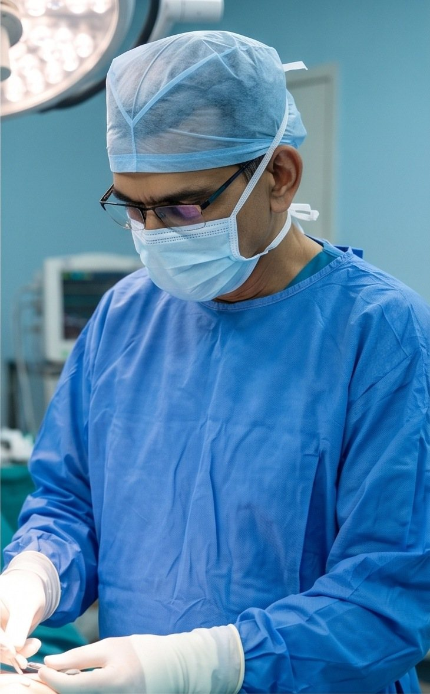
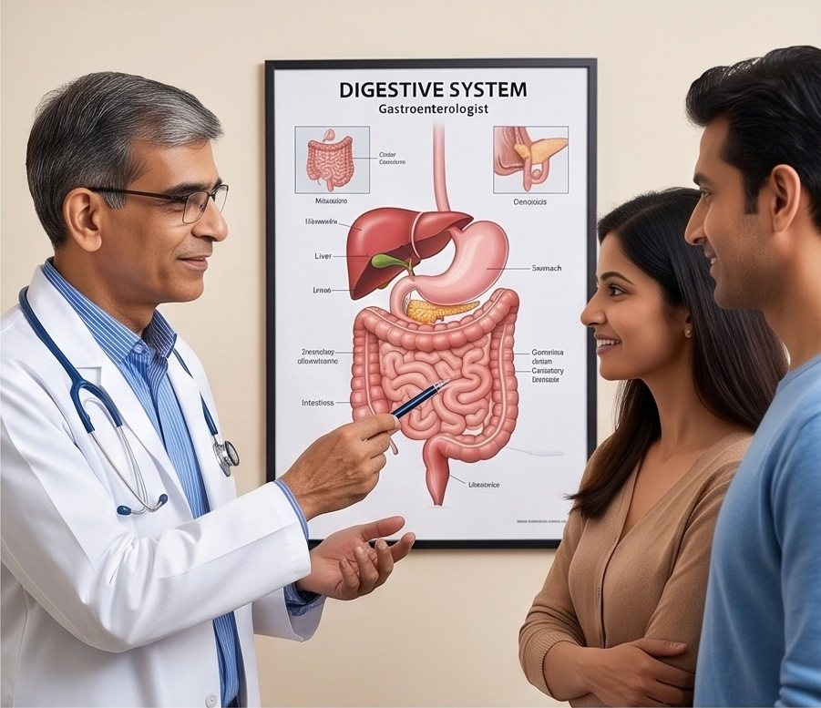
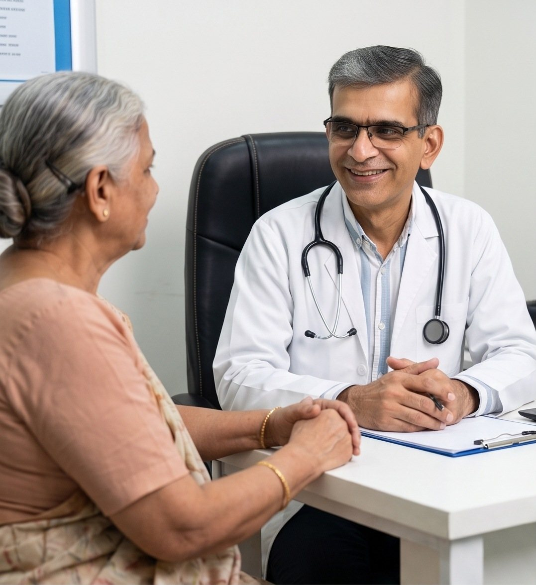

Home / Profile
Twenty years on one system
Dr. Firoz Alimohamed has treated gastrointestinal conditions since 2005. He trained on three continents, practises across Mombasa's major hospitals, and teaches on the regional postgraduate programme.

Education
Istanbul, Nairobi, Johannesburg
-
Istanbul, Türkiye
Istanbul University
Undergraduate medical degree.
-
Nairobi, Kenya
University of Nairobi
Postgraduate degree in Internal Medicine, the discipline that sits behind every gastroenterology decision.
-
Johannesburg, South Africa
University of the Witwatersrand
Fellowship training in Gastroenterology, including advanced diagnostic and therapeutic endoscopy.
Skills and experience
Diagnosis you can see
Since 2005 he has treated gastrointestinal and liver disease and performed advanced diagnostic and therapeutic endoscopies and colonoscopies. Therapeutic means the procedure treats as well as looks: removing polyps, stopping bleeding, widening a narrowed oesophagus, relieving blocked bile ducts.
- Consultant gastroenterology for adults, across the digestive tract and the liver
- Diagnostic and therapeutic gastroscopy and colonoscopy
- Visiting rights at all the major hospitals in Mombasa
- Gastroenterology consultations at the Aga Khan Hospital
- Inpatient reviews and urgent endoscopy for admitted patients
Teaching
Honorary lecturer, ECSACOP
Dr. Firoz teaches on the postgraduate programme of the East, Central and Southern Africa College of Physicians. The region trains its own specialists now, and teaching on that programme is how a standard of care spreads past the walls of one clinic.
Professional societies
Where the standards come from
Guidelines move. Membership is how practice in Mombasa stays aligned with what the evidence says this year, rather than what it said at the end of training.
- 2005Treating gastrointestinal conditions since
- 3Universities across three continents
- 3Professional society memberships
- AllMajor Mombasa hospitals visited
A week of the work
Clinic, list, ward, lecture
Different rooms, one job: work out what is actually happening, then treat it.





Advanced diagnostic and therapeutic endoscopy
Fellowship trained at the University of the Witwatersrand, performing the procedures that treat as well as look, since 2005.
How the consultation feels
A specialty of long relationships
Inflammatory bowel disease, chronic liver disease and surveillance after polyps are followed for years, not weeks. So the way a consultation feels matters as much as what gets written in it.
Patients are told what was found, in words they can repeat to their family, and what happens next. Questions asked twice get answered twice.

Referrals
Referring a patient?
Send the history, the current medicines and any results you already hold. Urgent inpatient referrals are accepted through the hospital.